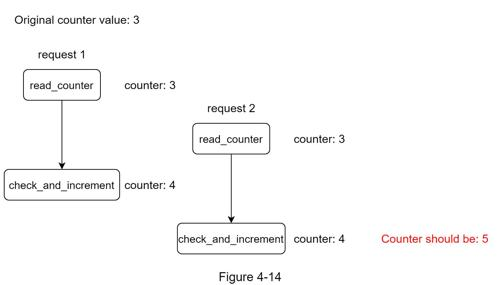
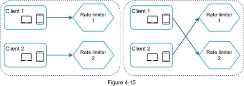
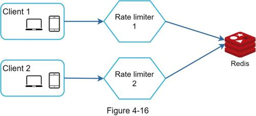
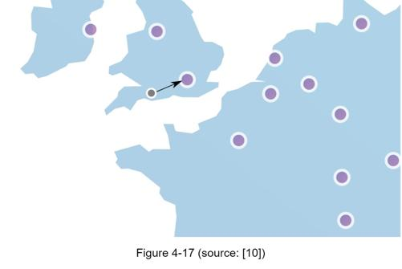

Building a rate limiter that works in a single server environment is not difficult. However, scaling the system to support multiple servers and concurrent threads is a different story. There are two challenges:
•Race condition
•Synchronization issue
As discussed earlier, rate limiter works as follows at the high-level:
•Read the counter value from Redis.
•Check if (counter + 1) exceeds the threshold.
•If not, increment the counter value by 1 in Redis.
Race conditions can happen in a highly concurrent environment as shown in Figure 4-14.

Assume the counter value in Redis is 3. If two requests concurrently read the counter value before either of them writes the value back, each will increment the counter by one and write it back without checking the other thread. Both requests (threads) believe they have the correct counter value 4. However, the correct counter value should be 5.
Locks are the most obvious solution for solving race condition. However, locks will significantly slow down the system. Two strategies are commonly used to solve the problem: Lua script [13] and sorted sets data structure in Redis [8]. For readers interested in these strategies, refer to the corresponding reference materials [8] [13].
Synchronization is another important factor to consider in a distributed environment. To support millions of users, one rate limiter server might not be enough to handle the traffic. When multiple rate limiter servers are used, synchronization is required. For example, on the left side of Figure 4-15, client 1 sends requests to rate limiter 1, and client 2 sends requests to rate limiter 2. As the web tier is stateless, clients can send requests to a different rate limiter as shown on the right side of Figure 4-15. If no synchronization happens, rate limiter 1 does not contain any data about client 2. Thus, the rate limiter cannot work properly.

One possible solution is to use sticky sessions that allow a client to send traffic to the same rate limiter. This solution is not advisable because it is neither scalable nor flexible. A better approach is to use centralized data stores like Redis. The design is shown in Figure 4-16.

Performance optimization is a common topic in system design interviews. We will cover two areas to improve.
First, multi-data center setup is crucial for a rate limiter because latency is high for users located far away from the data center. Most cloud service providers build many edge server locations around the world. For example, as of 5/20 2020, Cloudflare has 194 geographically distributed edge servers [14]. Traffic is automatically routed to the closest edge server to reduce latency.

Second, synchronize data with an eventual consistency model. If you are unclear about the eventual consistency model, refer to the “Consistency” section in “Chapter 6: Design a Key-value Store.”
After the rate limiter is put in place, it is important to gather analytics data to check whether the rate limiter is effective. Primarily, we want to make sure:
•The rate limiting algorithm is effective.
•The rate limiting rules are effective.
For example, if rate limiting rules are too strict, many valid requests are dropped. In this case, we want to relax the rules a little bit. In another example, we notice our rate limiter becomes ineffective when there is a sudden increase in traffic like flash sales. In this scenario, we may replace the algorithm to support burst traffic. Token bucket is a good fit here.